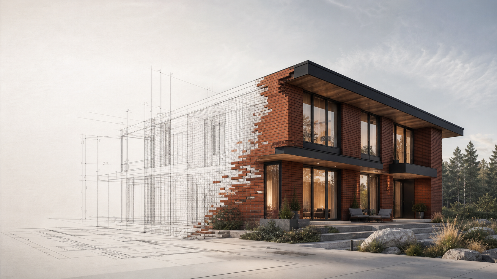
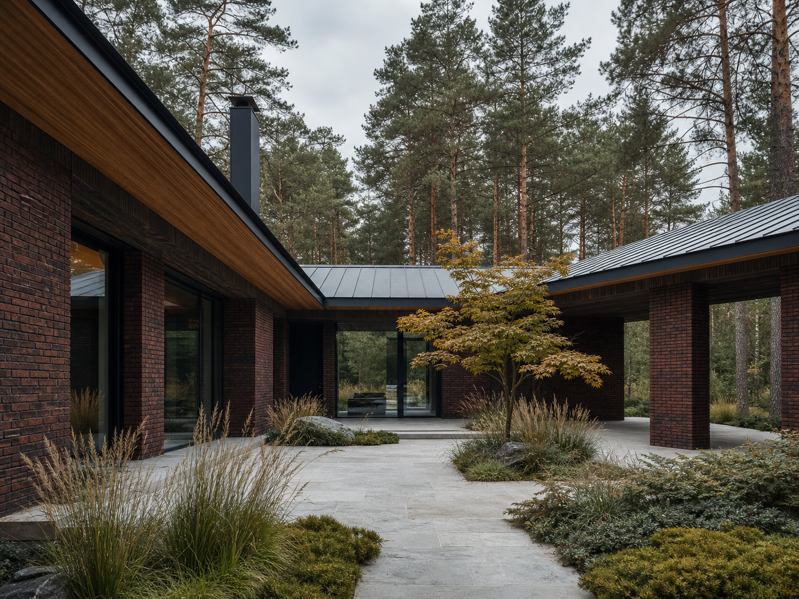
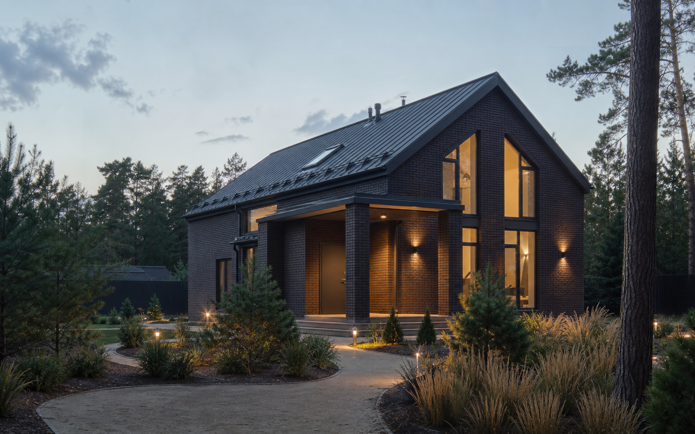
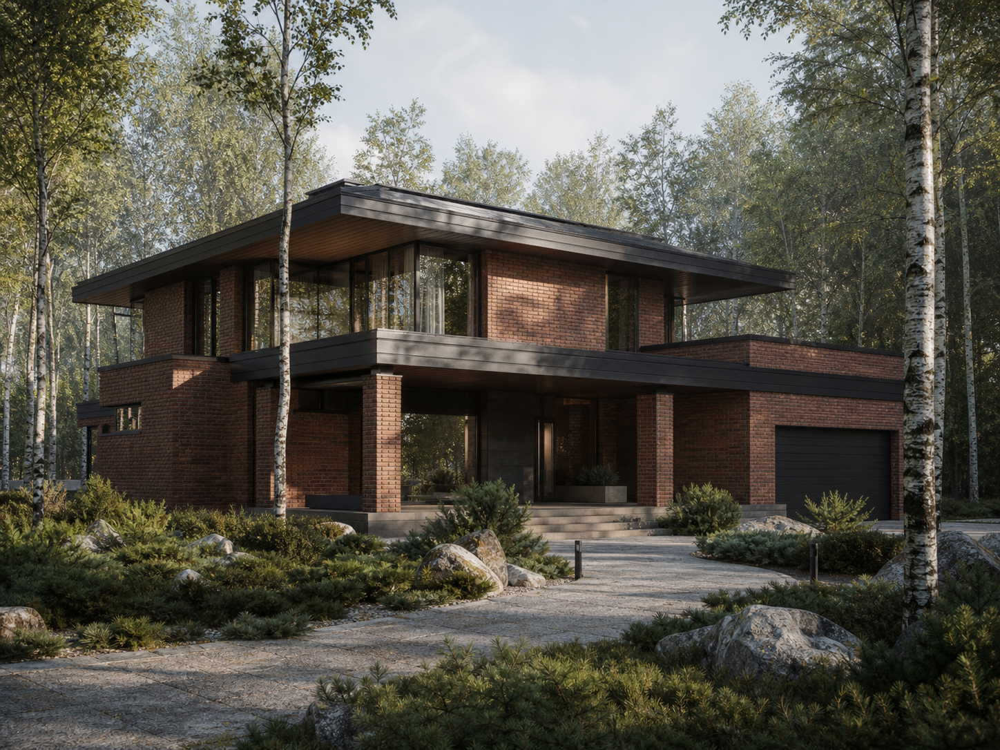
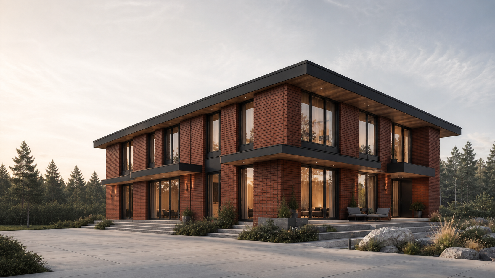
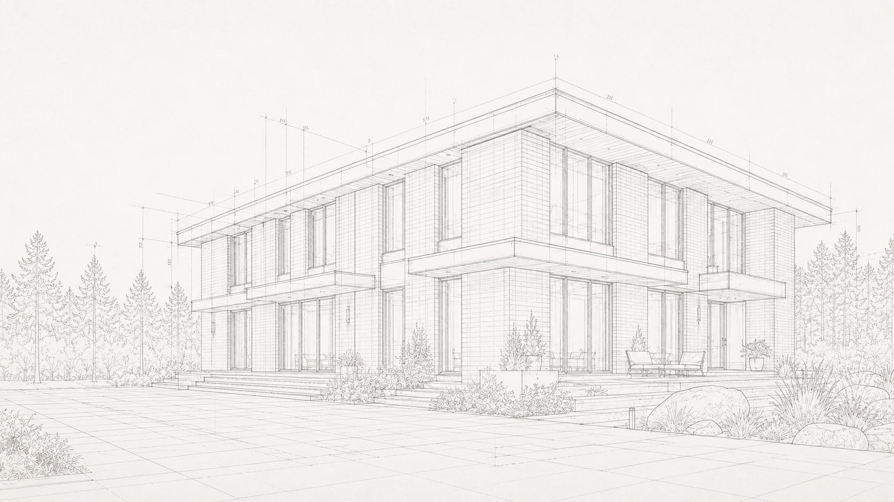

Фиксированная смета
Согласовываем состав работ до старта и держим бюджет в понятной рамке.
Строим в Москве и области
Берем на себя путь от идеи до передачи дома. С понятной сметой, сроками и регулярным контролем работ.
Стоимость
от 12 млн ₽
Срок
от 8 месяцев

24 000 мм9 450 ммКирпичный фасадСобрали для вас главные опоры процесса, чтобы проектирование и строительство не превращались в черный ящик.
Согласовываем состав работ до старта и держим бюджет в понятной рамке.
Закрепляем гарантийные обязательства на дом и сопровождаем после передачи.
Показываем ход работ и помогаем принимать решения без лишней неопределенности.
Планируем стройку по понятной последовательности и фиксируем сроки документально.
Один специалист держит в фокусе вопросы, решения и статус работ на каждом этапе.

Смысл материала
Это не только про фасад. Материал помогает собрать спокойное, теплое и выразительное пространство для семьи.
Кирпич помогает создавать дом с основательным характером и долгим жизненным циклом.
Продуманная конструкция стен помогает поддерживать спокойный микроклимат дома.
Массивные стены дают ощущение уединения и защищенного личного пространства.
Пластика кирпича, света и глубины фасада сохраняет выразительность годами.
Качественный кирпичный дом воспринимается как надежная основа для жизни семьи.
Концептуальные проекты
Это варианты для вдохновения и обсуждения. Каждый проект адаптируется под участок и привычки вашей семьи.

01218 м²Компактный, теплый, для постоянной жизни
218 м², 2 этажа, 3 спальни, Без гаража
Горизонтальная архитектура вокруг приватного двора
265 м², 1 этаж, 3 спальни, Гараж предусмотрен

03310 м²Выразительный семейный дом с большой террасой
310 м², 2 этажа, 4 спальни, Гараж предусмотрен
Строгая геометрия и архитектурная глубина фасада
280 м², 2 этажа, 4 спальни, Гараж предусмотрен
Разные пропорции, свет и посадка на участок помогают найти образ, который будет близок именно вам.
От первой встречи до передачи дома каждый этап имеет свою задачу и понятный результат.
Фиксируем задачи семьи и исходные данные участка.
Собираем планировку и архитектурный образ дома.
Согласовываем состав работ, бюджет и график.
Готовим надежную основу для будущего дома.
Формируем конструкцию, стены и геометрию фасада.
Настраиваем комфорт, свет и детали интерьера.
Передаем готовый дом и гарантийные документы.
Выберите основные параметры, чтобы увидеть ориентир по инвестициям в будущий дом.
Мы хорошо понимаем, какие вопросы появляются у семей до первого шага к строительству.
Для семьи, которой важно заранее понимать состав работ и ориентир по инвестициям.
Для владельцев, которые хотят видеть понятную картину по этапам, даже находясь в городе.
Для участка, который должен стать комфортным местом постоянной жизни всей семьи.
Для тех, кто выбирает долговечный материал и выразительный облик будущего дома.
Договоренности должны быть видны не только на старте. Поэтому держим процесс стройки понятным на каждом этапе.
Сравните образ проекта и вариант исполнения. Перемещайте разделитель мышью, касанием или клавишами.
Проект / вариант исполнения


Если не нашли свой вопрос, оставьте заявку. Поможем разобраться в спокойном разговоре.
На итог влияют площадь, архитектура, участок, состав инженерных решений, наличие гаража и выбранный уровень отделки.
Да. Концептуальный проект можно адаптировать под ваш участок, образ жизни и состав семьи после консультации.
Ориентировочный срок строительства начинается от 8 месяцев. Точный график зависит от проекта и условий участка.
В смете фиксируется согласованный состав работ. Детали формируются после консультации, выбора проекта и оценки участка.
Такой сценарий обсуждается индивидуально. На консультации определим порядок работ, который подходит вашей ситуации.
Мы выстраиваем понятную этапность и регулярно фиксируем прогресс, чтобы у вас оставалась целостная картина стройки.
Перед началом важно оценить геометрию, подъезд, рельеф и особенности грунта. Это обсуждаем до расчета точной стоимости.
Мы связываемся с вами, уточняем исходные данные и готовим предварительный ориентир по проекту и бюджету.
Следующий шаг
Оставьте контакты. Подготовим предварительный расчет и свяжемся в течение одного рабочего дня.